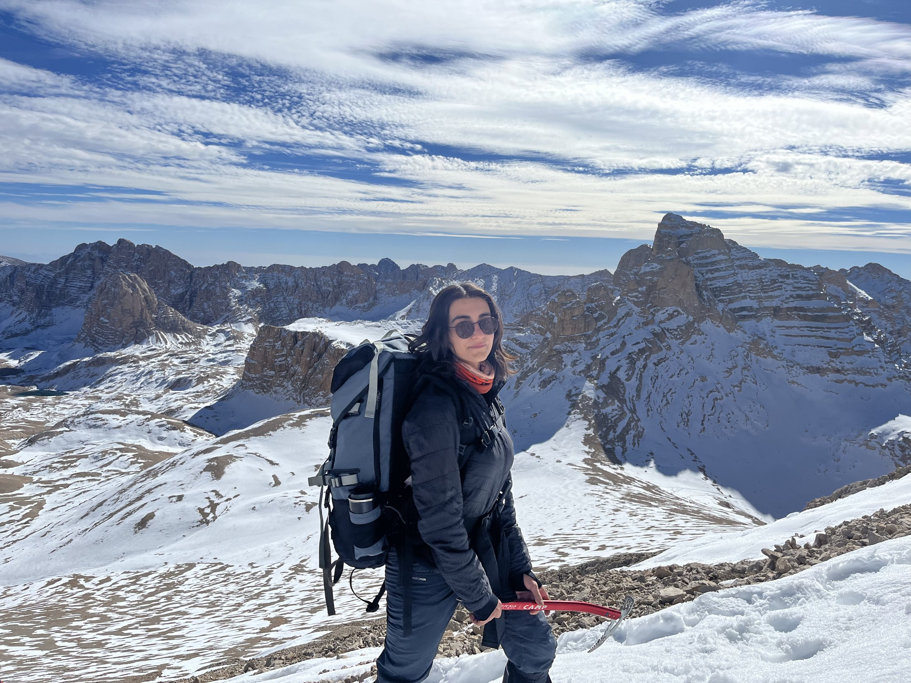

About the Summit
Emler is the highest peak in the Yıldız group within the Aladağlar range of the Central Taurus mountains in Turkey, reaching 3,723 metres. The Aladağlar is a compact but rugged limestone massif, home to Turkey's most challenging alpine terrain. The range is characterised by sharp ridges, deep cirques, glacial lakes, and notoriously loose rock on its upper faces.
This Ascent — July 2026
Reached during the same Aladağlar camp period as Yıldızlar (3–7 July 2026), but recorded as its own summit. Yıldızbaşı and Yıldızbatı belong together in the separate Yıldızlar report. The approach from Oba Yeri campsite involved steep scree, snow patches that had not yet melted, and several sections of exposed traversing.
The route demands careful foot placement throughout — the rock is heavily weathered and significant rockfall risk exists on the upper faces. Slab trekking poles were preferable to loose scree where available. Despite the conditions, the group completed the summit substantially ahead of the planned schedule.
Photos


